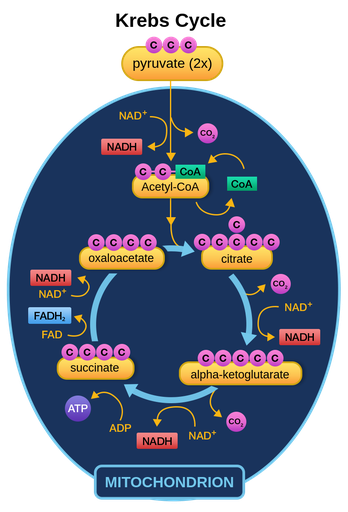

Krebs Cycle

The sceond stage is Krebs.cycle,also knonw as the citric acid cycle, wich occurs inside the mitochondrial matrix.Here,the pyruvate is conveted into acetyll-coa and goes through a series of reaction that release carbon dioxide and transfer high-energy electron to carrier molecule.This stage produce 2ATP,6NADH,2FDAH and carbon dioxide as waste product.
Go to next page --->